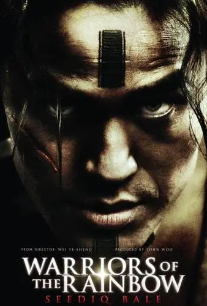

Homepage |
|||||
AboutUs |
Customs |
Traits | |||
Customs |
||
|---|---|---|
c1~war custom |
Alpine people believe that war is sacred, |
 |
c2~fishing custom |
Alpine people have their own unique way |
|
c3~ceremony custom |
The festivals of the Gaoshan people are very |
|
c4~clothing |
The clothing of the Gaoshan nationality is very |